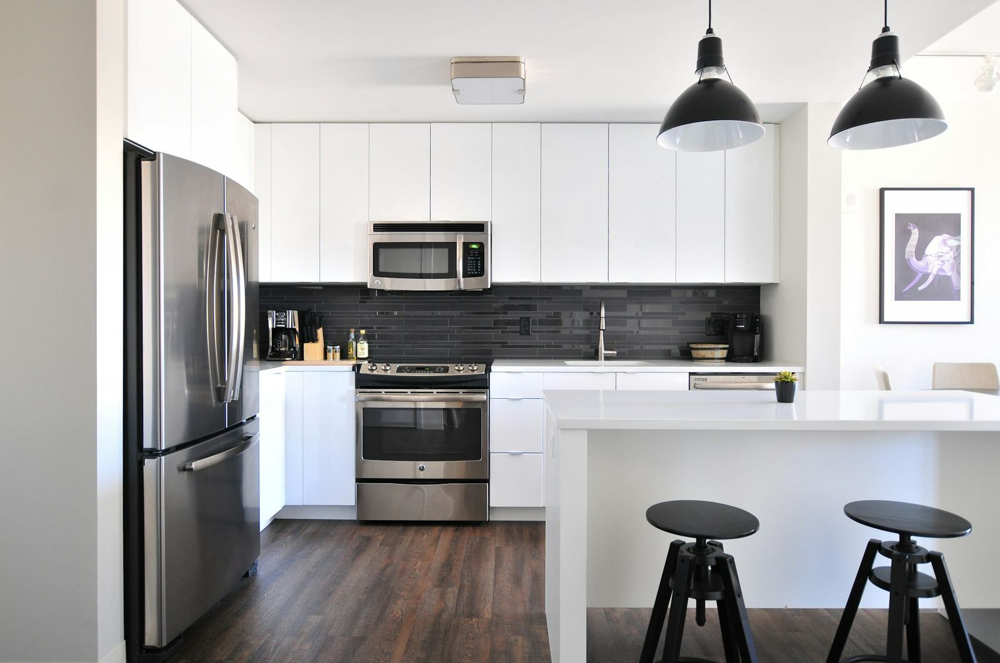
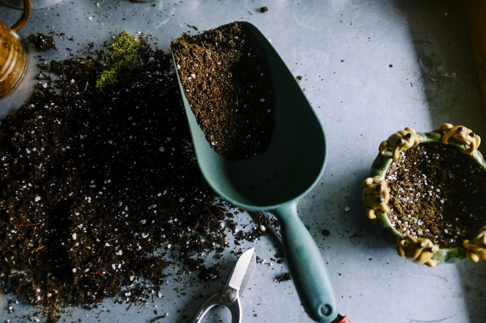

Vi får det att fungera.
Hemma. På jobbet. Överallt. Nexus Service tar hand om ditt bygg- och fastighetsprojekt från idé till färdigt resultat – i Stockholm med omnejd.
Hem & villa
Renovering, snickeri, måleri och trädgård. ROT- och RUT-avdrag där det gäller.
För företagLokaler & verksamheter
Anpassningar, reparationer och skötsel som inte stör den dagliga driften.
För fastighetsägare & BRFFastighetsservice
Löpande skötsel, underhåll, utemiljö och snöröjning – en kontakt för hela året.
Vi hjälper privatpersoner, företag, fastighetsägare och bostadsrättsföreningar med både mindre och större projekt – från löpande underhåll till kompletta renoveringar.
- Omfattning
- Bygg, renovering, underhåll och fastighetsskötsel i samma bolag.
- Arbetssätt
- En kontaktperson, en offert, ett ansvar – från idé till färdigt resultat.
- Område
- Stockholm med omnejd. Hemma, på jobbet och i fastigheten.
Tio tjänster. En leverantör.
Ett projekt kräver ofta flera yrken. Vi har dem under samma tak, så att rivning, bygg, måleri och skötsel hänger ihop.
Bygg & reparation
Mindre byggjobb, lagningar och åtgärder som inte kan vänta.
02Snickeri
Allt inom snickeri – från mindre reparationer till större projekt.
03Renovering
Kök, badrum och kompletta renoveringar av bostäder och lokaler.
04Takarbeten
Reparation, underhåll och åtgärder på tak och takavvattning.
05Rivning
Säker och effektiv rivning av väggar, kök, badrum och andra utrymmen.
06Måleri
Invändigt och utvändigt måleri med fokus på kvalitet och finish.
Fastighetsskötsel
Löpande skötsel och service av fastigheter, trapphus och gemensamma utrymmen.
08Invändigt & utvändigt underhåll
Planerat underhåll som håller fastigheten i skick och värde.
Gräsklippning, häck & trädgård
Regelbunden skötsel av gräsmattor, häckar, buskar och planteringar.
10Snöröjning & halkbekämpning
Säkra och tillgängliga utemiljöer på vintern.

Tre områden som täcker hela fastighetens livscykel.

Från en lagning till en totalrenovering.
- Bygg & reparation ROT
- Snickeri ROT
- Renovering ROT
- Takarbeten, rivning, måleri ROT

Löpande skötsel och planerat underhåll.
- Fastighetsskötsel Avtal
- Trapphus & gemensamma utrymmen Avtal
- Invändigt underhåll Projekt
- Utvändigt underhåll Projekt

Välskötta ytor, sommar som vinter.
- Gräsklippning RUT
- Häcktrimning RUT
- Trädgårdsservice RUT
- Snöröjning & halkbekämpning RUT
Från idé till färdigt resultat.
Samma fem steg oavsett om uppdraget tar en förmiddag eller tre månader.
Kontakt
Ni beskriver vad som behöver göras – per telefon, mejl eller via offertformuläret.
Platsbesök
Vi tittar på uppdraget på plats, ställer rätt frågor och föreslår en lösning.
Offert
Ni får en kostnadsfri offert med omfattning, pris och tidplan. Inga dolda tillägg.
Utförande
Egna hantverkare utför arbetet. Ni har en kontaktperson genom hela projektet.
Överlämning
Vi går igenom resultatet tillsammans med er och städar efter oss innan vi lämnar.
Fastighetens år, planerat.
Ett exempel på hur ett års fastighetsservice kan se ut. Innehållet anpassas efter er fastighet och ert avtal.
Läs om fastighetsserviceJan
- Snöröjning
- Halkbekämpning
- Tillsyn
Feb
- Snöröjning
- Takskottning
- Tillsyn
Mar
- Halkbekämpning
- Underhållsplan
- Tillsyn
Apr
- Sandupptagning
- Vårstädning
- Takavvattning
Maj
- Gräsklippning
- Plantering
- Fasadöversyn
Jun
- Gräsklippning
- Häcktrimning
- Utvändigt måleri
Jul
- Gräsklippning
- Utvändigt måleri
- Tillsyn
Aug
- Gräsklippning
- Häcktrimning
- Fönster & entréer
Sep
- Gräsklippning
- Beskärning
- Trapphus
Okt
- Lövhämtning
- Höststädning
- Hängrännor
Nov
- Lövhämtning
- Vinterförberedelse
- Invändigt underhåll
Dec
- Snöröjning
- Halkbekämpning
- Tillsyn
Fyra löften vi mäts mot.
Kvalitet
Vi kompromissar aldrig med kvalitet. Rätt material, rätt metod och ett arbete vi kan stå för när ni granskar det.
Pålitlighet
Vi håller vad vi lovar – varje gång. Det vi säger i offerten är det vi levererar, i tid och till överenskommet pris.
Flexibilitet
Vi anpassar oss efter era behov. Små och stora uppdrag, engångsjobb och löpande avtal.
Lokalt och engagerat
Vi bryr oss om våra kunder och vår miljö. Vi finns i Stockholm och tar ansvar för det vi gör här.
Stockholm med omnejd.
Vi arbetar lokalt. Det betyder korta inställelsetider, hantverkare som känner till stadens fastighetsbestånd och en leverantör som finns kvar när jobbet är klart.
Kontakta oss